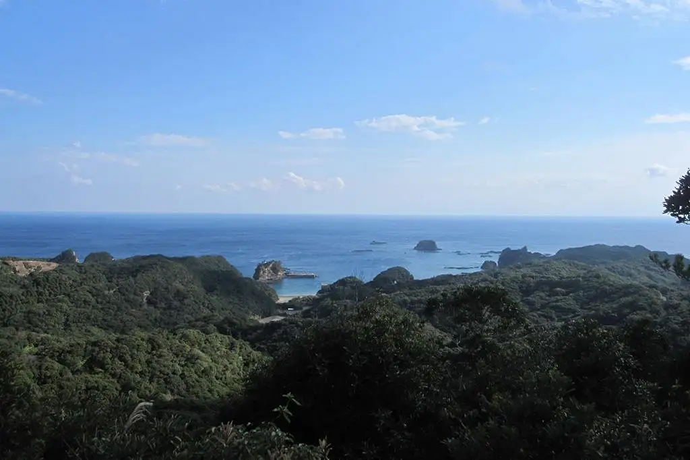
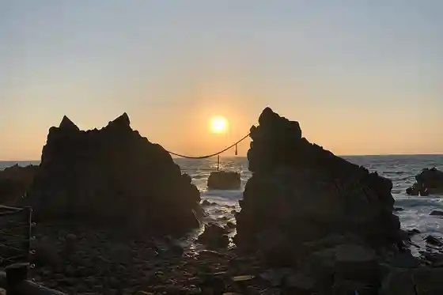
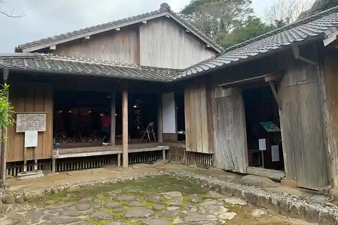
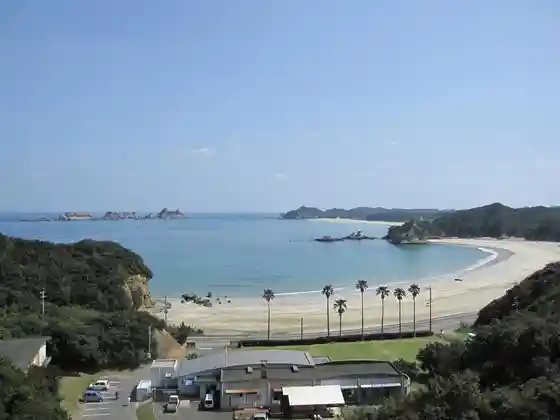
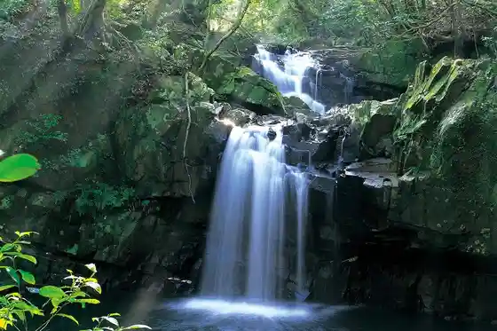

Japan / Kagoshima / Nakatane
Nakatane
Nakatane · Kagoshima
Nakatane
Highlighted on the Kagoshima map.

Sights
Osu Ryu Mesu Ryu no Iwa
Nakatane, Kagoshima · 0997-27-1111 · Official / source link

Ko City Ie House
Nakatane, Kagoshima · 0997-27-3711 · Official / source link

Nature Rekurieshon Village (Kumano Beach)
Nakatane, Kagoshima · 0997-27-8785 · Official / source link

Otoko Fuchi Onna Fuchi Falls
Nakatane, Kagoshima · 0997-27-1111 · Official / source link

Nakatane Onsen Hoyo Center
Nakatane, Kagoshima · 0997-27-9211 · Official / source link
Nippon'ichi no Dai Sotetsu (Sakai Shrine)
Nakatane, Kagoshima · 0997-27-1111 · Official / source link
Kumano Shrine
Nakatane, Kagoshima · 0997-27-9004 · Official / source link
Nagahama Coast
Nakatane, Kagoshima · 0997-27-1111 · Official / source link
Inu Shiro Tembo Tokoro
Nakatane, Kagoshima · 0997-27-1111 · Official / source link
Ritsu Setsu Iseki
Nakatane, Kagoshima · 0997-27-3711 · Official / source link
Inu Shiro Coast Umatate no Iwaya
Nakatane, Kagoshima · 0997-27-1111 · Official / source link
Nakatane Ritsu Folk History Museum
Nakatane, Kagoshima · 0997-27-2233 · Official / source link